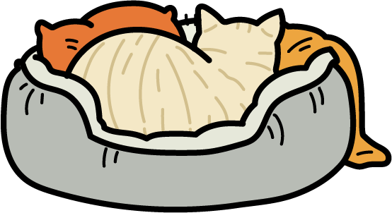
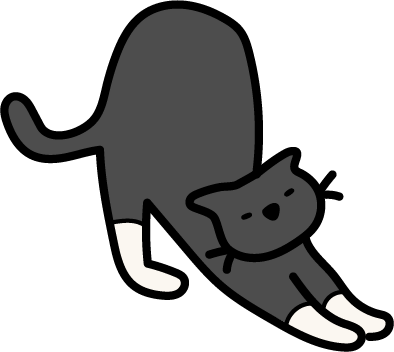

CAT ARCHIVES
Sleeping Habits

Why cats sleep so much:
Cats sleep between 12–18 hours a day because their bodies are built for bursts of intense energy followed by long periods of rest. Even indoor cats keep the instincts of their wild ancestors, conserving energy in case they need to "hunt." Sleep also helps them grow, heal, and process stress, which is why kittens, seniors, and anxious cats often nap even more.

Tips for creating a comfy sleep environment
Give your cat multiple cozy spots around your home so they can choose where they feel safest. Soft bedding, warm sunlight, and elevated perches often make ideal nap zones. Keep their resting spaces quiet, clean, and away from drafts. Adding familiar scents, like their blanket or a piece of your clothing, can also help them relax and settle into deeper sleep.
Best sleeping positions & what they mean:
A cat curled tightly into a ball is trying to stay warm or feel secure. When they sleep on their back with their belly exposed, it usually means they feel completely safe in their environment. The loaf position (paws tucked under) shows a light, quick nap, while sprawling on their side signals deep relaxation. Each pose reveals how comfortable and trusting they feel.